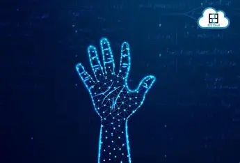

AI-powered virtual whiteboard using hand gestures
This project uses a webcam to track and recognize hand gestures, allowing users to write or draw on a virtual screen in real time. It's built with Python, OpenCV, and Mediapipe. Ideal for smart classrooms, creative tools, or hands-free control systems.